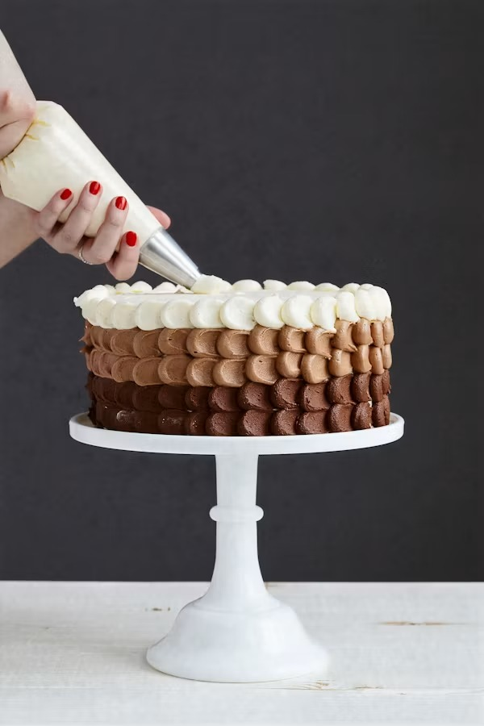
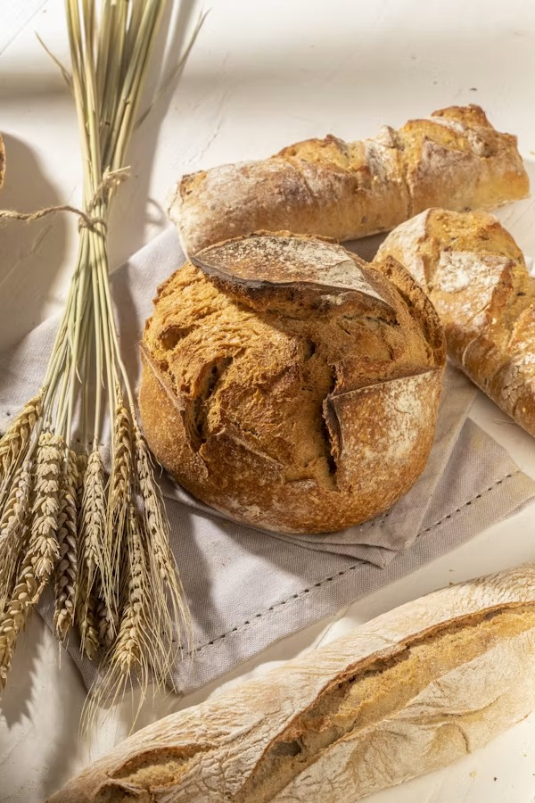
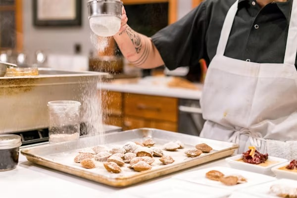
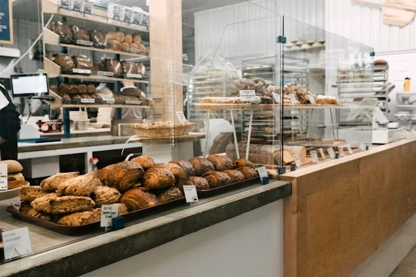

About Mzansi Bites Bakery

Our Story
Mzansi Bites Bakery was founded in 2019 by the Naidoo family in Durban, starting as a small home kitchen selling bread to neighbours. Word of mouth quickly grew our small operation into a beloved local bakery, known for combining traditional South African recipes with modern baking techniques.
Our Mission
To bring quality, home-style baked goods to the community using fresh, local ingredients.
Our Vision
To become Durban's go-to neighbourhood bakery, known for quality, warmth, and community connection.
Meet the Team
- Priya Naidoo — Founder & Head Baker
- Sipho Dlamini — Pastry Chef
- Thandi Mokoena — Cake Decorator
A Look Inside


